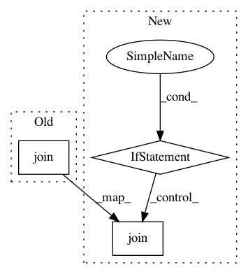

1aac481957dda7b9873a4204b5c96cb4e2c205c6,pytorch_lightning/plugins/training_type/horovod.py,HorovodPlugin,barrier,#HorovodPlugin#,118
Before Change
hvd.join()
def barrier(self, *args, **kwargs):
hvd.join()
def broadcast(self, obj: object, src: int = 0) -> object:
obj = hvd.broadcast_object(obj, src)
return obj
After Change
hvd.join()
def barrier(self, *args, **kwargs):
if torch_distrib.is_initialized():
hvd.join()
def broadcast(self, obj: object, src: int = 0) -> object:
obj = hvd.broadcast_object(obj, src)
return obj
In pattern: SUPERPATTERN
Frequency: 8
Non-data size: 3
Instances
Project Name: williamFalcon/pytorch-lightning
Commit Name: 1aac481957dda7b9873a4204b5c96cb4e2c205c6
Time: 2021-03-02
Author: thomas@grid.ai
File Name: pytorch_lightning/plugins/training_type/horovod.py
Class Name: HorovodPlugin
Method Name: barrier
Project Name: dmlc/gluon-nlp
Commit Name: 57eb411fedc739a4bcee817bb6a05c92b32013e3
Time: 2020-07-22
Author: 37728728+ZheyuYe@users.noreply.github.com
File Name: scripts/conversion_toolkits/convert_fairseq_xlmr.py
Class Name:
Method Name: convert_fairseq_model
Project Name: ray-project/ray
Commit Name: a7caa14d3d8951cd83d3fe205e1b3e6aa26606f2
Time: 2020-12-15
Author: rliaw@berkeley.edu
File Name: python/ray/autoscaler/_private/updater.py
Class Name: NodeUpdater
Method Name: wait_ready
Project Name: chainer/chainercv
Commit Name: 0f86a229bbd497233fdbec45e1a26719bd2d330b
Time: 2019-02-06
Author: Hakuyume@users.noreply.github.com
File Name: examples/pspnet/train_multi.py
Class Name:
Method Name: main
Project Name: streamlit/streamlit
Commit Name: 335fe96d753ecd5408dd2f9ee56a03136aa1a472
Time: 2019-01-22
Author: thiagot@gmail.com
File Name: lib/streamlit/proxy/FSObserver.py
Class Name: FSObserver
Method Name: _close
Project Name: keras-team/autokeras
Commit Name: eb0e952a0aaf8774453256c08514273caf062aa5
Time: 2020-06-04
Author: jhfjhfj1@gmail.com
File Name: docs/autogen.py
Class Name:
Method Name: py_to_nb_md
Project Name: tsurumeso/waifu2x-chainer
Commit Name: fde30ed2472b88928892e338cdd3c1f68f874c6d
Time: 2017-08-02
Author: nstm101339@gmail.com
File Name: lib/dataset_sampler.py
Class Name: DatasetSampler
Method Name: get
Project Name: keras-team/autokeras
Commit Name: 81440f10f2f3622985689ab4c67a143ca5024b37
Time: 2019-01-24
Author: jun@beomi.net
File Name: autokeras/image/image_supervised.py
Class Name:
Method Name: read_images